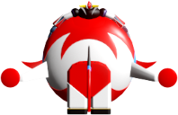
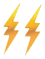
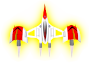

		<div id="idGameInfo" class="DivModal noSelect">
			<div id="idDivGameInfo">
				<button id="idGameInfoExitBtn" class="ExitBtn">X</button>
				<div id="idGameInfoTitle" style="position:relative">
					
					Informations
					
				</div>
				<div class="BoxGameInfo Zoom" style="border-radius:5px">
					<div id="table">
					   
					   <div class="row">
					   <div class="cellInfo">


					   <div class="InfoBarTitleDiv">
						   <h3>
							   A propos du jeu : version 2.0
						   </h3>
					   </div>
					   
					   <b>Le propos</b>
					   <br>Ce jeu a été développé absolument pour le fun sans cahier des charges et totalement de manière autodidacte.
					   <br>N'étant pas rémunéré pour ça je ne ferais pas de modifications à la demande, que ce soit de l'évolution ou de la correction de bug.

					   <br><br><b>Le jeu et la série</b>
					   <br>Pour les puristes, ce jeux n'a pas vocation de plaquer à la série. Il manque des armes, Goldorak reste dans sa soucoupe etc ... C'est avant tout un shoot'em up sans scénario. <b>"On est juste là pour tout dégommer"</b>.
					   <br>Ne cherchez pas non plus une logique chronologique dans le déroulement des séquences et certains éléments du jeux sont des trucs que j'ai inventé.


						<br><br><div class="InfoBarTitleDiv">
							<h3>
								Infos et conseils jeux
							</h3>
						</div>

					   <b>Contrôle</b>
					   
					   <br><br>° Click gauche pour tirer
					   <br>° Touche CTRL  - Planitrons
					   <br>° Barre d'espace - Cornofulgure
					   <br>° X - Fulguropoing et <b>? et ; pour les gauchers.</b>
					   <br>° P - Pause
					   <br>° Echap - pour sortir de la partie encours.
					   					   
					   <br><br><b>Bonus et divers ...</b>
					   <br><br><b>Le Méga Mach</b>
					   <br>Il vous sert de bouclier d'énergie. Par rapport à la série sa fonction a été devoyée mais on s'en fou.
					   <br>Il ne vous rend pas totalement invulnérable. il vous protège des lazer et des missils mais pas des collisions avec les entités.
					   <br>Evitez de le prendre pendant une phase de tourelles.
					   

					   <br><br><b>Le Méga Volt</b>
					   <br>Il est limité dans le temps, pour l'avoir de nouveau il faut prendre un nouveau bonus.
					   <br>Je vous le conseille contre les tourelles, le seul truc c'est que vous ête obligé de vous approcher d'elles.

					   <br><br><b>Le Cornofulgure</b>
					   <br>Attention c'est une denrée rare à ne pas gaspiller.
					   <br>Essayez de les garder pour les boss
					   <br>Quand un cornofulgure a été employé, il faut 8 secondes d'attente avant de pouvoir employer le prochain.
					   <br>Ce timing simule un temps de rechargement.


					   <br><br>
					   
					   
					   <b>Les aides de camps</b>
					   <br>Ils ont tous 3 vies et vous protègent aussi contre d'éventuelles collisions. Le pauvre Alcor en prend plein la tête !!
					   <br>Quand ils perdent totalement leur vie il faut reprendre un bonus pour les avoir de nouveaux.
					   <br>Au fur et à mesure que vous prenez des bonus du même type, leur tir s'améliore.
					   <br>Si ils se font toucher, ils perdent une vie et leur tir regresse.

					   <br><br>
					   <b>Le bonus GlkGo</b>
					   <br>Ce bonus traverse l'écran assez rapidement et c'est voulu.
					   <br>Quand on l'attrape, on a accès immédiatement à un stage de points.

					   <br><br>
					   <b>Le bonus Goldorak le retour</b>
					   <br>Ce bonus permet d'améliorer les planitrons, de base ils sont à tir directionnel.
					   <br>Avec ce bonus ils deviennent des projectiles à tête chercheuse à durée limitée.


						<br><br><div class="InfoBarTitleDiv">
							<h3>
								Les activités ...
							</h3>
						</div>

					   <p><b>La partie libre</b>
					   <br>C'est une partie de jeu classique. On y joue pour réaliser un tour de jeu et c'est tout.
					   <br>Si le joueur n'est pas connecté, ses scores ne sont pas enregistrés.

					   <p><b>Les autres activités</b>
					   <br>On leur donnera un nom comme 'Le festin des loups' par exemple et elles auront pour but
					   <br>de réaliser des concours de score, et il y aura peut être un lot à la clef à gagner.

					   <p><b>L'entrainement</b>
					   <br>C'est une partie de jeu non scénarisée et aléatoire pour s'entrainer.
					   <br>Les scores de l'entrainement ne sont jamais enregistrés.

					   


						<br><br><div class="InfoBarTitleDiv">
							<h3>
								Navigateurs, graphisme et autre ...
							</h3>
						</div>

					   <p><b>Les navigateurs</b>
					   <br>J'ai principalement testé <b>Google Chrome</b> et <b>FireFox</b>.
					   <br>Cette application ne fonctionne pas sur iPhone, SmartPhone et compagnie ...</p>
					   
					   <p><b>Résolution graphique</b>
					   <br>Résolution graphique minimale <b>1920 * 1080</b>.
					   <br>Si vous jouez avec une résolution inférieur vous risquez d'avoir des surprises.</p>
					   
					   <p><b>Redimentionnement du texte</b>
					   <br>Ce jeux ne prend pas en compte le redimensionnement du text du système d'exploitation.
					   <br>Si vous jouez avec un redimentionnement supérieur à 100% vous risquez de ne pas visualiser toute la zone de jeux.</p>

					   <p><b>F11 - Le plein écran</b>
					   <br>Pour plus de confort il est pérérable de jouer en plein écran avec la touche <b>F11</b>.
					   <br>Pour revenir au mode normal faites F11 à nouveau.</p>			   

					   <p><b>Les scores</b>
					   <br>Cette nouvelle version du jeu vous permet d'enregistrer vos scores dans une base de données.
					   <br>Pour les parties non connecté et l'entrainement, les scores ne sont pas enregistrés.


						<br><br><div class="InfoBarTitleDiv">
							<h3>
								Pour les développeurs
							</h3>
						</div>

					   <b>Le code source</b>
					   <br>Le code de cette application est entièrement libre, les développeurs en herbe pourront en faire ce qu'ils veulent.
					   <br>Juste un truc, comme disait Coluche <b>"On est toujours le con d'un autre"</b>, et comme je sais qu'en informatique on est toujours le mauvais développeur d'un autre, si le code source ne vous convient pas, si vous considérez qu'il ne répond pas à des normes ou à aucun pattern de dev ou je ne sais quoi encore, en bref si vous trouvez que ce code est de la merde alors faites donc comme dans l'infanterie ... Tirez-vous ailleurs !!!
					   <br>Et je le répète, ce jeux a été developpé gratuitement et pour le fun, je ne suis donc pas ici pour me toucher la nouille ...
					   </p>

					   <p><b>La techno</b>
					   <br>Développement réalisé en pure Javascript et programmation objet.
					   <br>La surface de jeux est dessinée dans un élément de type Canvas.
					   <br>Auncun moteur de jeux n'a été employé.
					   <br>Le système de collision est un truc tout à fait perso à base de Quadtree, d'intersection de zones rectangulaires ou bien d'un segment et d'un cercle ou bien encore d'un cercle avec un autre cercle.</p>
					   <p>
					   <a href="./GoldoFigth.zip">GoldoFight source code</a>
					   <a href="http://localhost/GoldoShoot/GoldoFigth.zip">Download ZIP</a>
					   </p>
					   </div></div>
					   
					</div>
				</div>
			</div>
		</div>	
